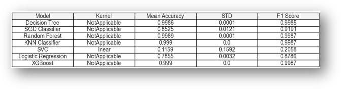
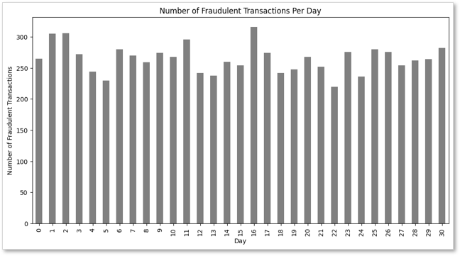
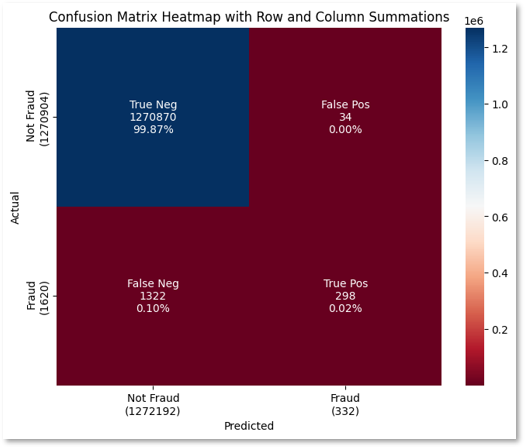

This project focused on applying machine learning techniques to detect patterns in financial fraud data. Models explored included Random Forest, Decision Trees, KNN, SVC, Logistic Regression, SGD, and XGBoost.

Using Python, we performed data cleaning, exploratory analysis, and visualization to better understand transaction behavior. Key trends included variation in fraud frequency by transaction type and timing.

Multiple models were evaluated using the F1 score to balance precision and recall. The most important predictors of fraud were transaction amount and transfer type.

This project also emphasized ethical considerations, including data privacy and bias in automated decision-making systems.